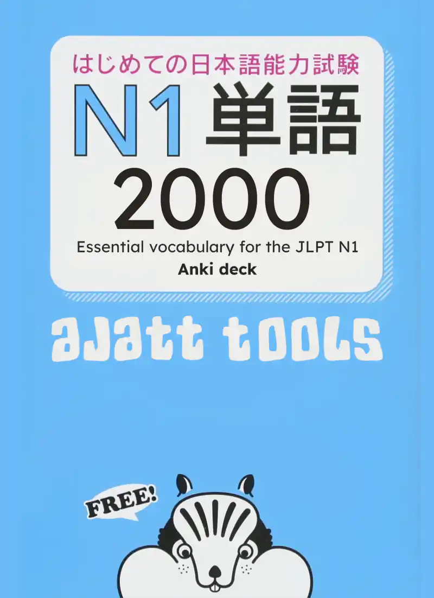
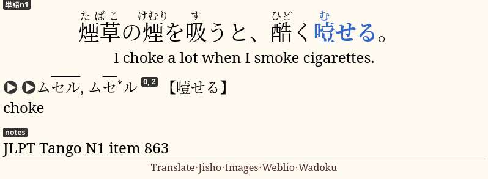

JLPT Tango N1 Anki deck

3000 Essential Vocabulary for the JLPT N1, also known as JLPT Tango N1, is a textbook to prepare for the JLPT N1. It contains ~2000 Japanese sentences and their English translations. The book includes vocabulary found commonly on the JLPT and often used in everyday life.
With the help of our chat members, we have created an Anki deck from sentences listed in the book and native audio that comes with it.
About
After JLPT Tango N2 Anki deck was released, we started working on the N1 deck. We took sentences from the book, downloaded audio from the publisher's website and combined them to make this Anki deck.
This deck is meant to be used with the AJATT method of language learning. It assumes that you are immersing in Japanese media, mining sentences and studying Japanese grammar on your own. We recommend this deck if you want to learn vocabulary for the JLPT N1, frontload basic vocabulary to increase your comprehension or to aid the process of sentence mining.
The deck has cards formatted as bilingual targeted sentence cards. A sentence is shown on the front, the target word on the front is highlighted. Readings, translation, meanings of words and audio are on the back. Refer to the linked article if you don't know how to review TSCs.

A card from JLPT Tango N1.
Each card also comes with a MakeProductionCard field that, when filled, turns the card into a
production TSC.
On a production TSC the target word is spelled in kana,
and you have to recall how to write it in kanji.
As it should be obvious by its title, the book was designed with the Japanese Language Proficiency Test in mind. However, we were interested in the book for quite different purposes. You can download audio recordings for all the sentences in the book from the publisher's website. By combining audio with the sentences extracted from the book we were able to create a high quality TSC deck.
Download
To download the deck, get Ankidrone Essentials version 7 or later.
The Rest of the Tango Series
The JLPT Tango N1 book is actually one in a series of JLPT prep books. There are five books total, one for each level of the JLPT. Prior to starting this deck I advise you to complete Tango N5, N4, N3 and N2 decks. They are available as a part of Ankidrone Essentials.
How To Study
If you follow the method of language learning described on this site, by the time you start this deck, you should already be doing sentence mining. While you go through the cards in the deck, delete the ones you already know.
We recommend continuing to sentence mine while learning cards from the deck. Learn between 10~30 cards a day total. Keep in mind that the more new cards you learn each day, the more daily reviews you'll have in the long term.
For more detailed instructions see How to review.
Commentary
This is the last deck in the Tango series. Its release completes Ankidrone Essentials, the basic vocabulary deck I worked on for two years. Ankidrone Essentials has been immensely successful, and since it first came out in February 2020 it has helped thousands of people with studying Japanese.
The work is not totally over though. If there are any typos or errors found, I will be correcting them and uploading new versions.
While editing the deck I went through every sentence present in it. My impression is that the words featured in the book are easy enough to be correctly described as basic vocabulary. I don't know if this is what JLPT N1 is supposed to be like. If I take JLPT in the future, I might be able to tell whether the books match the test levels they're marketed for.
However, if you're doing AJATT and aren't planning to prepare for JLPT, the Tango decks should be a perfect supplement for you. They contain easy and common words, and going through the decks will help you better understand your immersion.
Additional information
- Furigana was mass-generated using the AJT Furigana add-on. If you notice that the machine-generated readings contain errors, please report them in our chat.
- Pitch accents were mass-generated using the AJT Pitch Accent add-on.
- On cards where vocabulary definitions didn't make much sense we replaced them with definitions from JMdict.
- The number 3000 that you see in the original book does not represent the number of sentences in it. The actual number of sentence items is around 2000.
- Images were sourced from a Vietnamese Tango deck which was deleted from AnkiWeb before this deck came out.
Feedback
We'd love to hear from you! DJT space has a Tango deck feedback room to give feedback on the deck. If you have any questions, ideas, or errors to report, please join us.
Credits
Thanks to everybody who helped put this together.
Tags: vocab